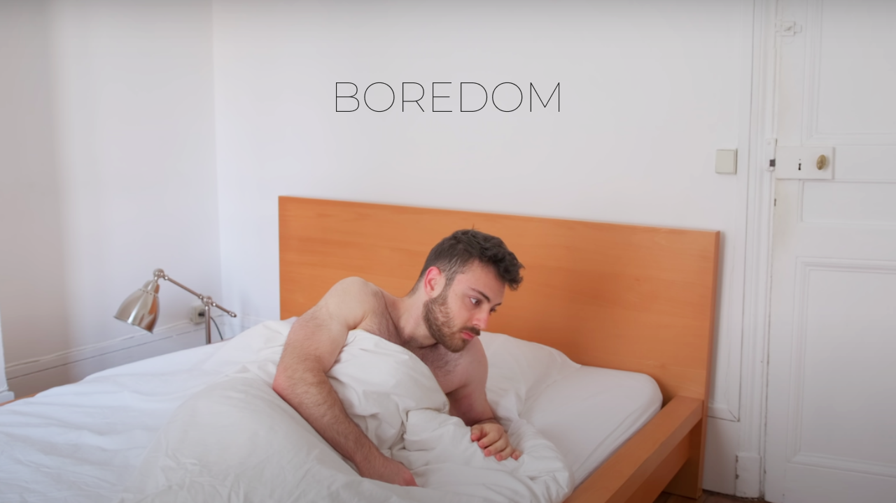
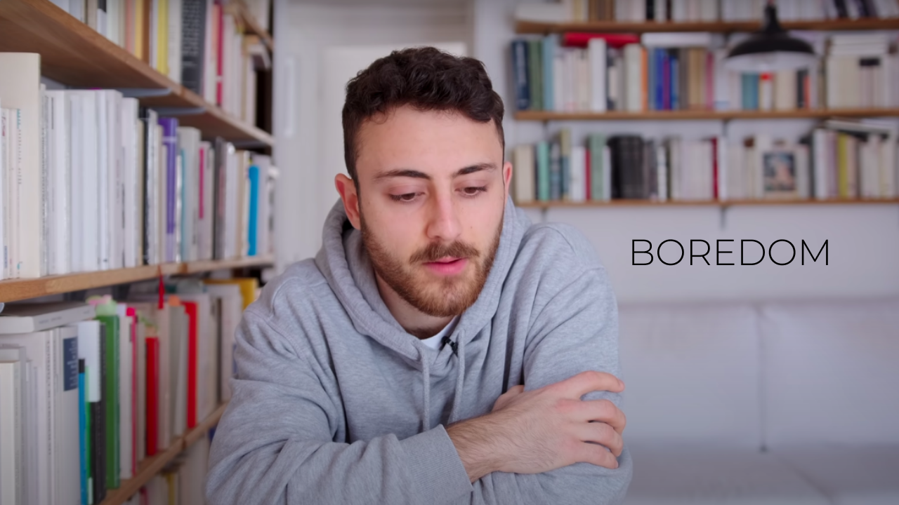
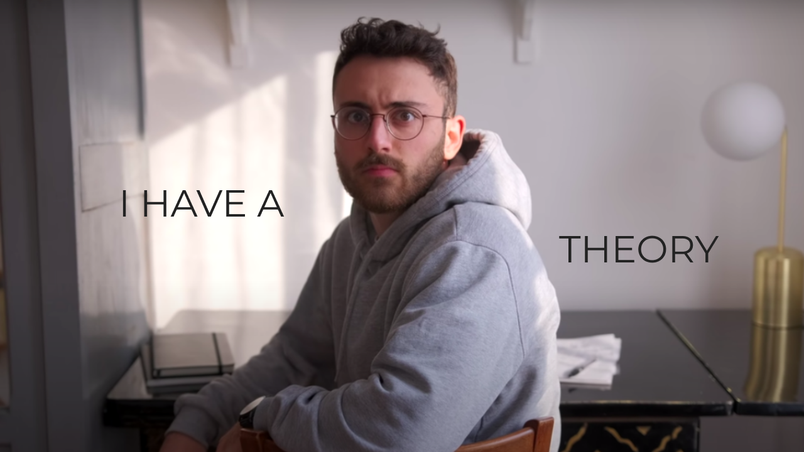
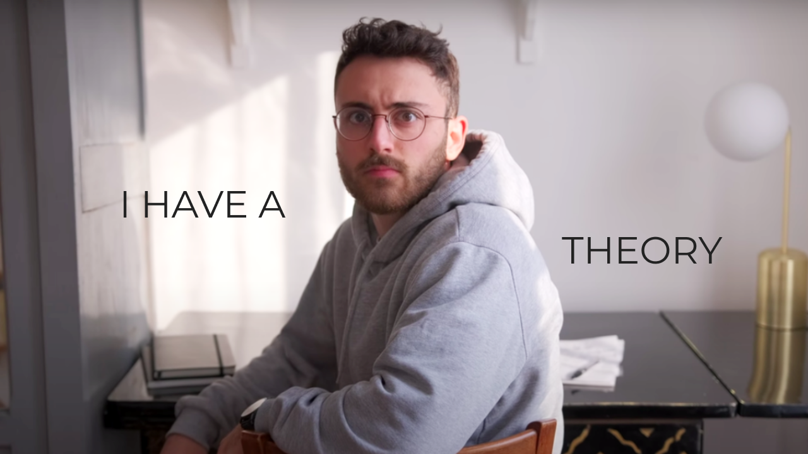
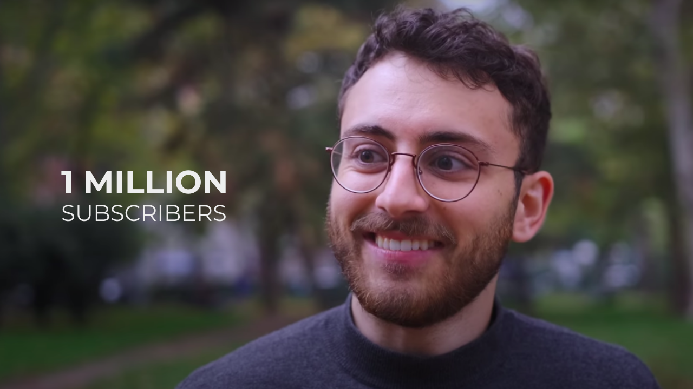
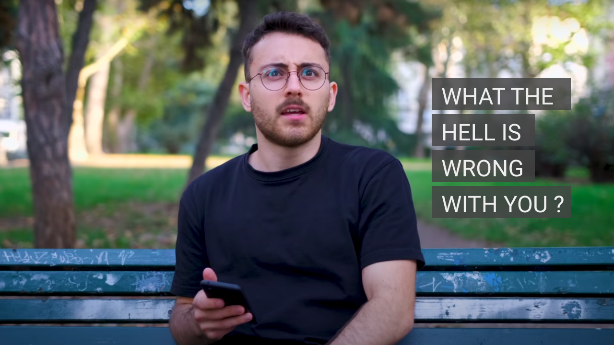

I have created following Thumbnails with 3 distinct goals:
Idea 1 & 2 : Stills from video insinuating Boredom
 I have a theory @1:24 kind of fits with this still from @7:55
Turned up exposure a bit for visibility
Still from the video @12:46, More of a happy and sobering vibe, celebrating 1 million.
"What the hell is wrong with you?" from @0:56 fits with this still from @12:40 a little too well. going with a more cheeky, fun vibe for this one.
